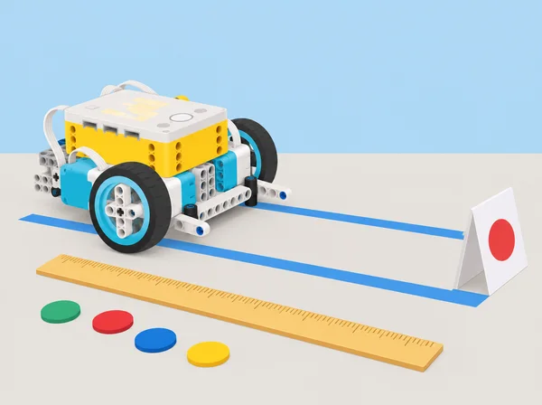
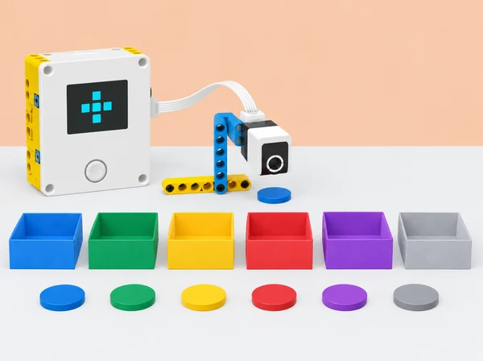
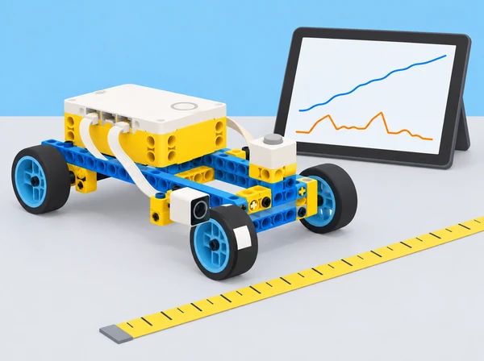
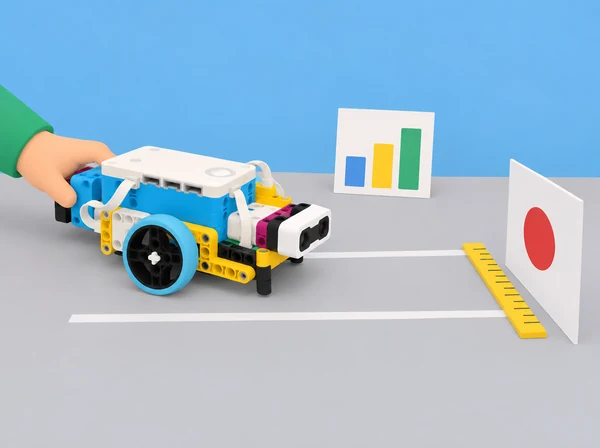
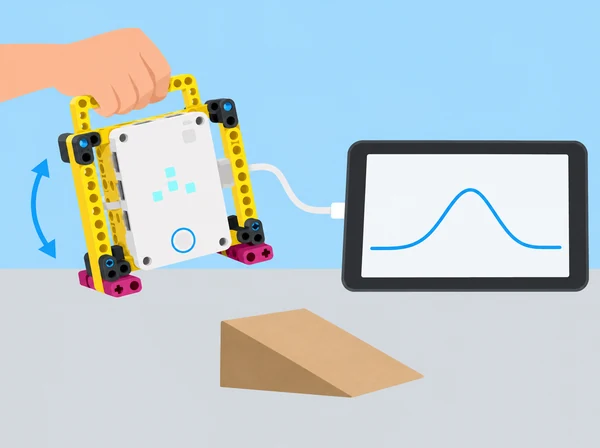

Mesurar per decidir
🏷️ Variables, mesures i gestió
🌱 Situació, repte i intenció
La seqüència adapta les sis lliçons de la unitat Variables de Foundations of Physical Computing. Les pràctiques de “vol” de la font es converteixen en models a mà i trajectòries de taula: SPIKE Prime no és un dron i la seua orientació no mesura la posició d’un vehicle en l’espai.
🎯 Aprenentatges i vocabulari
- Yaw: gir al voltant de l’eix vertical; pitch i roll: inclinacions en dos eixos diferents. Useu els termes com a convenció per descriure orientació.
- Variable: nom associat a un valor que el programa pot llegir i actualitzar, com ara
paquets_blausodistancia_cm. - Mesura: la predicció calculada amb la circumferència de la roda no és idèntica al recorregut real, que depén de la superfície, el lliscament, l’alineació i la bateria.
- Decisió: una recomanació ha d’indicar criteris, costos simulats i límits de les dades.
🎯 Aprenentatges i vocabulari
- Usar variables i comptadors per descriure l’orientació, la distància i la velocitat d’una maqueta.
- Fer mesures repetibles i registrar unitats, condicions inicials i diferències entre intents.
- Comparar rutes de servei simulades amb criteris explícits de distància i temps.
- Explicar els límits de les mesures i evitar extrapolar-les a distàncies reals sense calibratge.
🧰 Materials i preparació
Un set SPIKE Prime 45678 i dispositiu amb l’app SPIKE per equip; hub carregat, peces per a un marc amb nansa i per a un carretó lleuger de rodes lliures, obstacles baixos de cartó, sensor de color, sensor de força, fitxa blanca i negra per a una roda, taula amb espai lliure, targetes de colors, cinta mètrica i fulls per a prediccions i gràfics.
Per al joc, reserveu un corredor o espai interior de 4 m, marqueu un únic carril d’anada i diana de paper a 2, 3 i 4 m; no useu passadissos compartits ni feu llançaments amb persones dins del recorregut. Connecteu el hub per USB o Bluetooth i comproveu abans de la sessió que l’app mostra el gràfic, les variables i les lectures emprades. Prepareu el programa, un exemple de corba i una alternativa amb dades simulades si no hi ha connexió;
disposeu d’una balança escolar o d’una massa mesurada pel docent.
📅 Seqüència didàctica
Orientar-se sense volar (60–90 min)
Fase 1 · Activem i prediem
Obriu amb dues preguntes: com sabem si un moviment és precís i què pot revelar-ne un gràfic? Cada alumne anota una hipòtesi sobre la informació que podria donar una corba d’orientació.
Fase 2 · Explorem i construïm
Amb un màxim de deu peces, construïu un model amb davant, darrere, dalt i baix. Representeu pitch (inclinació del davant), roll (inclinació lateral), yaw (gir sobre l’eix vertical) i dues combinacions. Munteu després un marc amb nansa que subjecte el hub sense tapar la matriu i marqueu-ne el davant.
Fase 3 · Expliquem i registrem
Connecteu el hub per USB o Bluetooth, obriu el gràfic de línia de l’app SPIKE i configureu el flux de dades d’orientació. Dibuixeu la predicció abans de començar i fixeu una posició inicial estable, amb la matriu orientada cap a l’alumnat.
Fase 4 · Apliquem i millorem
Programeu una prova de deu segons que represente un trajecte recte amb un obstacle baix de cartó. Eleveu i abaixeu el davant una vegada mentre avanceu suaument. Compareu la predicció amb la corba de pitch, assenyaleu-ne el pic i repetiu a una altra velocitat. Qui necessite una entrada més simple pot subjectar directament el hub; manteniu el programa ajustat a la posició del model.
Fase 5 · Comprovem i reflexionem
Llegir una ruta a partir de dades (60–90 min)
Fase 1 · Activem i prediem
Prepareu dos carrils paral·lels d’anada i tornada, d’uns dos metres, amb obstacles baixos de cartó i espai lliure als costats. Dibuixeu la ruta i prediu on caldrà pitch per superar l’obstacle i yaw per girar.
Fase 2 · Explorem i construïm
Useu el hub com a simulador manual; el seu angle no és la posició del model. Configureu el gràfic per registrar yaw, manteniu una posició inicial comuna i feu una passada lenta i contínua. Marqueu els moments de gir al registre i relacioneu-los amb la corba.
Fase 3 · Expliquem i registrem
Afegiu pitch o roll en una segona prova i compareu els moviments. Intercanvieu els gràfics amb una altra parella perquè reproduïsca el patró. Anoteu quins trams són ambigus i quina interpretació proposa cada equip.
Fase 4 · Apliquem i millorem
Definiu una condició calibrada que mostre un senyal quan yaw o pitch supera un llindar. Proveu un valor per sota, un en el llindar i un per damunt. Com a extensió, estimeu el pendent d’un tram quasi recte amb dos punts (canvi d’angle/temps) i compareu-lo amb una segona prova.
Fase 5 · Comprovem i reflexionem
Comptar destinacions amb variables (90 min)
Fase 1 · Activem i prediem
Presenteu cinc safates de devolució fictícies, identificades amb color i símbol, i una sisena safata de revisió. Cada equip classifica deu targetes simulades sense codi, anota quantes n’arriben a cada destinació i prediu què canviaria si s’alterara l’ordre.
Fase 2 · Explorem i construïm
Escriviu pseudocodi per classificar les targetes i preparar una resposta de revisió per als casos no previstos. Manteniu símbols a més dels colors perquè la classificació no depenga només de la percepció cromàtica.
Fase 3 · Expliquem i registrem
Definiu i inicialitzeu a zero comptador_blau, comptador_verd, comptador_groc, comptador_roig, comptador_lila i revisio_manual. Abans d’executar el programa, feu una traça de taula amb la mateixa seqüència i anoteu els valors finals esperats.
Fase 4 · Apliquem i millorem
Llegiu les targetes d’una en una amb el sensor de color. Repetiu deu lectures, sumeu una unitat al comptador corresponent i envieu qualsevol color desconegut a revisió manual. Compareu els resultats amb la traça, afegiu comentaris i depureu una errada controlada, com oblidar reiniciar una variable.
Fase 5 · Comprovem i reflexionem

Distància, velocitat i representació gràfica (90 min)
Fase 1 · Activem i prediem
Feu rodar dues rodes unides per un eix amb una empenta suau. Estimeu el recorregut amb rajoles o passos i després comproveu-lo amb cinta mètrica. Predigueu com el diàmetre de la roda afectarà la distància per volta.
Fase 2 · Explorem i construïm
Munteu un carretó lleuger amb rodes lliures, una marca blanca i negra en una roda, el sensor de color orientat a la marca i el sensor de força accessible. Mesureu la circumferència de la roda almenys tres vegades i calculeu-ne la mitjana.
Fase 3 · Expliquem i registrem
Connecteu el hub a l’app SPIKE i activeu el gràfic i les variables. El programa espera el toc al sensor de força, registra el temps i compta els cicles de la marca amb el sensor de color. En una taula delimitada i buida, feu una empenta controlada i atureu el registre quan el carretó pare.
Fase 4 · Apliquem i millorem
Llegiu la corba de distància i mesureu el temps entre dos passos consecutius pel mateix marcador per estimar la velocitat en cm/s. Comproveu distància = circumferència × voltes i velocitat = distància / temps, amb unitats. Repetiu tres intents i canvieu una sola condició cada vegada: intensitat de l’empenta o diàmetre de roda.
Fase 5 · Comprovem i reflexionem

Joc de distància: encertar i justificar (90 min)
Fase 1 · Activem i prediem
Recupereu el carretó instrumentat i delimiteu un carril recte, amb línia de llançament i diana a 2 m. Feu dues o tres proves d’escalfament i predigueu com l’empenta, el pes o la superfície poden alterar el recorregut.
Fase 2 · Explorem i construïm
Inicialitzeu massa_kg, velocitat_cm_s, velocitat_m_s, energia_J, error_cm i error_acumulat_cm. Després de cada empenta, llegiu la velocitat del registre, convertiu-la dividint per 100 i actualitzeu la massa real si canvieu peces pesades.
Fase 3 · Expliquem i registrem
Calculeu energia_J = 0.5 × massa_kg × velocitat_m_s². Mesureu sempre des de la part davantera del carretó fins al centre del blanc, registreu l’error absolut en cm i acumuleu-lo. Tres intents formen cada ronda.
Fase 4 · Apliquem i millorem
Després dels tres intents, moveu la diana a 3 m i repetiu; feu una ronda a 4 m només si l’espai és prou llarg i segur. Alterneu qui empeny perquè cada persona tinga el mateix nombre d’intents. Entre dianes, trieu si manteniu la massa i canvieu la intensitat, o canvieu el pes mesurat mantenint l’empenta tan constant com siga possible. No canvieu les dues variables alhora.
Fase 5 · Comprovem i reflexionem

Qui planifica els recursos? Finances i gestió empresarial (90 min)
Fase 1 · Activem i prediem
Connecteu la ruta de la biblioteca amb finances i gestió/administració d’empreses. Qui organitza recursos i com col·laboren aquestes funcions? Cada persona pot completar privadament una targeta d’interessos i habilitats; compartir-la és voluntari.
Fase 2 · Explorem i construïm
En equips, proposeu quatre ocupacions per via i classifiqueu tasques, habilitats, entorn, formació i relacions amb altres ocupacions. Investigueu almenys dues ocupacions de cada via amb fonts actuals seleccionades per la docent, com l’Observatori de les Ocupacions del SEPE o webs institucionals. Anoteu data, tasques, habilitats i via d’accés; no convertiu una previsió en certesa.
Fase 3 · Expliquem i registrem
Useu les dades de la maqueta —distància, temps, intents i girs— i un full de costos ficticis igual per a tots els equips per calcular dues opcions de lliurament. Separeu les mesures de maqueta dels preus i supòsits inventats, mostreu una suma verificable i justifiqueu una recomanació per a la biblioteca.
Fase 4 · Apliquem i millorem
Amb peces SPIKE, representeu una via professional —flux de pressupost, planificació d’operacions o comprovació de comptes— sense construir un robot nou. Prepareu una explicació d’un minut que relacione les parts del model amb una tasca, una habilitat i una ocupació investigada.
Fase 5 · Comprovem i reflexionem

🧪 Evidències i avaluació
Recolliu el vocabulari anotat de yaw/pitch/roll, l’esbós dels dos carrils, les corbes reals de pitch i yaw amb el moviment que les genera, la comparació entre dues velocitats, pseudocodi, programa comentat i els tres casos de prova del llindar. Per a les variables, guardeu el pseudocodi de recompte, la taula de les deu lectures, els valors finals, la prova amb etiqueta desconeguda, el joc de puntuació i la depuració de la variable no reiniciada.
Per a distància/velocitat, conserveu les mesures de circumferència, gràfics de distància i sensor de color, temps entre voltes i velocitat en cm/s. Del mini-repte, guardeu la massa mesurada, la conversió a m/s, els valors d’energia en joules, les tres mesures d’error per diana a 2/3/4 m, l’error acumulat i l’estratègia revisada entre rondes.
Per a la lliçó professional, avalueu la matriu comparativa de les dues vies, la qualitat/data de les fonts, el pressupost amb supòsits separats, el model físic i el pitch d’un minut; useu criteris comuns de precisió, relació tasca-habilitat-ocupació i ús explícit d’evidències. Valoreu si l’alumnat correlaciona moviment físic i corba, explica què representa cada eix, inicialitza i actualitza variables, controla les condicions, usa unitats coherents, verifica el càlcul i limita la conclusió a les dades observades.
Autoavaluació individual sobre interpretació de gràfics, variables, decisions amb dades, gestió del temps/materials, col·laboració i interessos propis; la reflexió personal es conserva privada. La parella revisora prova de reproduir el patró de l’altra, destaca un encert i proposa una millora concreta; qui ha creat el gràfic pot respondre si la prova confirma la interpretació.
♿ Participació, accessibilitat i seguretat
Oferiu rols rotatius de muntatge, registre, programació, càlcul i comunicació; accepteu gràfics tàctils o esquemàtics i instruccions escrites en lloc de conducció manual. La classificació usa només dades fictícies. No es registren trajectes, noms ni préstecs reals de l’alumnat. Els models es mouen sobre taula amb espai lliure, velocitat baixa i peces menudes recollides; el hub s’atura abans de connectar o modificar mecanismes. Les conclusions econòmiques són una simulació escolar, no una estimació de cost d’un servei públic.
🔗 Referents i adaptació
Adapta les sis lliçons de la unitat 6 Variables de LEGO Education Foundations of Physical Computing: Drone Pitch and Roll, Drone Movements, Variables, Graphing, Speed, and Distance, Mini-Challenge: Distance Game i Connecting to Careers: Finance and Business Management.
La primera i la segona lliçó ara mantenen el model amb nansa, el flux de dades real de pitch/roll/yaw, la lectura de corbes, la prova a velocitats diferents, la recreació d’un gràfic i el pas a obstacles i recorregut de retorn; el vol és una simulació manual sobre taula, no un dron real.
La quarta recupera la maqueta de rodes lliures, inici amb el sensor de força, recompte de voltes amb sensor de color, gràfics de distància/temps, velocitat en cm/s i estimació de l’energia cinètica amb massa i velocitat en unitats coherents. La cinquena ja fa servir aquests resultats: programa variables de massa, velocitat i energia, afegeix pes mesurat al carretó i compara tres intents per diana a 2/3/4 m amb error acumulat i estratègia basada en dades.
La resta conserva la progressió de variables per al recompte i la connexió professional. El flux de gràfics de moviment pren com a referent funcional la lliçó pública Stretch with Data; els procediments, exemples, context i il·lustració són propis.